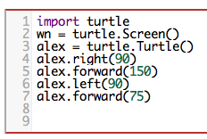
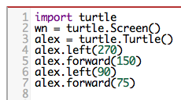
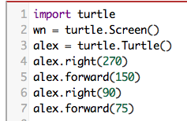
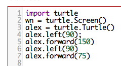

9. Notre premier programme de Turtues/Turtle¶
Aperçu rapide de la journée
Apprenez à dessiner en Python en utilisant le module turtle/turtle.
- CS20-CP1 Apply various problem-solving strategies to solve programming problems throughout Computer Science 20.
- CS20-FP1 Utilize different data types, including integer, floating point, Boolean and string, to solve programming problems.
- CS20-FP2 Investigate how control structures affect program flow.
Il existe de nombreux modules en Python qui fournissent des fonctionnalités très puissantes que nous pouvons utiliser dans nos propres programmes. Certains d’entre eux peuvent envoyer un courriel ou récupérer des pages Web. D’autres nous permettent d’effectuer des calculs mathématiques complexes. Nous avons déjà utilisé un module, appelé easygui_qt, qui nous permettait d’utiliser des fenêtres contextuelles lorsque nous demandions une saisie de l’utilisateur. Aujourd’hui, nous allons présenter un module qui nous permet de créer un objet de données appelé turtle pouvant être utilisé pour dessiner des images. *Le module turtle est très similaire à la fonctionnalité du stylo que nous avons explorée avec Scratch! * Notez que le module turtle fait partie de l’installation standard de Python, vous n’avez donc pas besoin de l’installer avant de l’utiliser.
Turtle Graphics, comme il est connu, est basé sur une métaphore très simple. Imaginez que vous avez une tortue qui comprend l’anglais. Vous pouvez dire à votre tortue de faire des commandes simples telles que avancer et tourner à droite. Lorsque la tortue se déplace, si sa queue touche le sol, elle tracera une ligne (laissant une trace derrière) à mesure qu’elle se déplacera. Si vous dites à votre tortue de relever la queue, elle peut toujours se déplacer mais ne laissera pas de trace. Comme vous le verrez, vous pouvez faire des dessins assez étonnants avec cette capacité simple.
Essayons quelques lignes de code Python pour créer une nouvelle tortue et commençons à dessiner une figure simple comme un rectangle. Nous ferons référence à notre première tortue en utilisant le nom de variable alex, mais souvenez-vous que vous pouvez choisir le nom de votre choix aussi longtemps que vous suivez les règles de noms du chapitre précédent.
Le programme, tel qu’il est montré, ne dessinera que les deux premiers côtés du rectangle. Après la ligne 4, vous aurez une ligne droite allant du centre du dessin à la droite. Après la ligne 6, vous aurez une toile avec une tortue et un rectangle à moitié dessiné. Appuyez sur le bouton Exécuter pour essayer et voir.
Le programme, tel qu’il est montré, ne dessinera que les deux premiers côtés du rectangle. Après la ligne 4, vous aurez une ligne droite allant du centre du dessin à la droite. Après la ligne 6, vous aurez une toile avec une tortue et un rectangle à moitié dessiné. Appuyez sur le bouton Exécuter pour essayer et voir.
Essayez ceci!
Modifiez le programme ci-dessus en ajoutant les commandes nécessaires pour que alex complète le rectangle.
9.1. Comprendre un programme de turtle¶
Voici quelques points que vous devez comprendre sur le programme de turtle que nous avons écrit ci-dessus.
La première ligne indique à Python de chercher un module nommé turtle. Ce module nous apporte deux nouveaux types que nous pouvons utiliser: le type Turtle et le type Screen. La notation avec un point turtle.Turtle signifie “Le type de *Turtle défini dans le module turtle”*. (N’oubliez pas que Python est sensible à la casse, le nom du module, turtle, avec un t minuscule, est différent du type Turtle en raison du T majuscule.)
Nous créons ensuite et ouvrons ce que le module turtle appelle un écran/screen (nous préférerions l’appeler une fenêtre ou, dans le cas de cette version Web de Python, simplement un toile), que nous affectons à la variable window. Chaque fenêtre contient une toile, qui est la zone à l’intérieur de la fenêtre sur laquelle nous pouvons dessiner.
Dans la ligne 3, nous créons une tortue. La variable alex fait référence à cette tortue. Ces trois premières lignes nous préparent à dessiner.
Aux lignes 4 à 6, nous ordonnons à l’objet alex de se déplacer et de se tourner. Nous faisons cela en invoquant ou en activant les méthodes à alex - ce sont les instructions auxquelles toutes les tortues savent répondre. Ici, le point indique que les méthodes invoquées appartiennent à, et font référence à l’objet alex.
Vérifie ta compréhension
-
first-turtle1: Dans quelle direction la tortue fait-elle face lorsqu’elle est créée?
- Nord
- Certains systèmes de tortues commencent avec une tortue qui fait face au nord, mais pas celle-ci.
- Sud
- Non, regardez le premier exemple avec une tortue. Dans quelle direction se déplace la tortue?
- Est
- Oui, la tortue commence face à l'est.
- Ouest
- Non, regardez le premier exemple avec une tortue. Dans quelle direction se déplace la tortue?
9.1.1. Programmes mixtes¶
first-turtle2: Le programme suivant utilise une tortue pour dessiner un L majuscule, comme indiqué dans l’image,  mais les lignes sont mélangées. Le programme doit faire tous les réglages nécessaires comme: importer le module turtle, obtenir la fenêtre sur laquelle on peut dessiner et créer la tortue. Rappelez-vous que la tortue commence face à l'est quand elle est créée. La tortue doit se tourner vers le sud et tracer une ligne de 150 pixels de long, puis se tourner vers l’est et tracer une ligne de 75 pixels de long. Nous avons ajouté une boussole à la photo pour indiquer les directions nord, sud, ouest et est.
mais les lignes sont mélangées. Le programme doit faire tous les réglages nécessaires comme: importer le module turtle, obtenir la fenêtre sur laquelle on peut dessiner et créer la tortue. Rappelez-vous que la tortue commence face à l'est quand elle est créée. La tortue doit se tourner vers le sud et tracer une ligne de 150 pixels de long, puis se tourner vers l’est et tracer une ligne de 75 pixels de long. Nous avons ajouté une boussole à la photo pour indiquer les directions nord, sud, ouest et est.
Faites glisser les blocs d'instructions de la colonne de gauche vers la colonne de droite et placez-les dans le bon ordre. Cliquez ensuite sur Check Me pour voir si vous avez raison. On vous dira si des lignes sont dans le mauvais ordre.
import turtle
window = turtle.Screen()
ella = turtle.Turtle()
---
ella.right(90)
ella.forward(150)
---
ella.left(90)
ella.forward(75)
first-turtle3: Le programme suivant utilise une tortue pour dessiner une coche comme indiqué à gauche,  mais les lignes sont mélangées. Le programme doit faire tous les réglages nécessaires comme: importer le module turtle, obtenir la fenêtre sur laquelle on peut dessiner et créer la tortue. La tortue doit faire face au sud-est, tracer une ligne de 75 pixels de long, ensuite faire face au nord-est, et tracer une ligne de 150 pixels de long. Nous avons ajouté une boussole à la photo pour indiquer les directions nord, sud, ouest et est. Le nord-est est entre le nord et l'est. Le sud-est est entre le sud et l'est.
mais les lignes sont mélangées. Le programme doit faire tous les réglages nécessaires comme: importer le module turtle, obtenir la fenêtre sur laquelle on peut dessiner et créer la tortue. La tortue doit faire face au sud-est, tracer une ligne de 75 pixels de long, ensuite faire face au nord-est, et tracer une ligne de 150 pixels de long. Nous avons ajouté une boussole à la photo pour indiquer les directions nord, sud, ouest et est. Le nord-est est entre le nord et l'est. Le sud-est est entre le sud et l'est.
Faites glisser les blocs d'instructions de la colonne de gauche vers la colonne de droite et placez-les dans le bon ordre. Cliquez ensuite sur Check Me pour voir si vous avez raison. On vous dira si des lignes sont dans le mauvais ordre.
import turtle
---
window = turtle.Screen()
---
maria = turtle.Turtle()
---
maria.right(45)
maria.forward(75)
---
maria.left(90)
maria.forward(150)
first-turtle4: Le programme suivant  utilise une tortue pour dessiner une ligne unique à l'ouest, comme indiqué à gauche, mais les lignes de programme sont mélangées. Le programme doit faire tous les réglages nécessaires comme: importer le module turtle, obtenir la fenêtre sur laquelle on peut dessiner et créer la tortue. La tortue doit alors se tourner pour faire face à l'ouest et tracer une ligne de 75 pixels de long.
utilise une tortue pour dessiner une ligne unique à l'ouest, comme indiqué à gauche, mais les lignes de programme sont mélangées. Le programme doit faire tous les réglages nécessaires comme: importer le module turtle, obtenir la fenêtre sur laquelle on peut dessiner et créer la tortue. La tortue doit alors se tourner pour faire face à l'ouest et tracer une ligne de 75 pixels de long.
Faites glisser les blocs d'instructions de la colonne de gauche vers la colonne de droite et placez-les dans le bon ordre. Cliquez ensuite sur Check Me pour voir si vous avez raison. On vous dira si des lignes sont dans le mauvais ordre.
import turtle
window = turtle.Screen()
jamal = turtle.Turtle()
jamal.left(180)
jamal.forward(75)
9.2. Les Méthodes de tortu/Turtle Methods¶
Un objet peut avoir différentes méthodes (choses qu’il peut faire), et il peut aussi avoir des attributs (parfois appelés propriétés/properties). Par exemple, chaque tortue a un attribut color. L’appel de la méthode alex.color ("red") fera qu’alex soit rouge et que la ligne qu’il dessine sera aussi rouge.
La couleur de la tortue, la largeur de son stylo (queue), la position de la tortue dans la fenêtre, son orientation, etc. font tous partie de son état actuel. De même, la fenêtre de l’objet a une couleur d’arrière-plan qui fait partie de son état.
Il existe un grand nombre de méthodes qui nous permettent de modifier les objets; tortue et fenêtre. Dans l’exemple ci-dessous, nous montrons simplement quelques une et n’avons commenté que les lignes qui diffèrent de l’exemple précédent. Notez également que nous avons décidé d’appeler notre objet tortue tess et avons changé le nom de l’objet Screen à wn.
La dernière ligne joue un rôle très important. La variable wn fait référence à la fenêtre ci-dessus. Lorsque nous appelons sa méthode exitonclick, le programme suspend l’exécution et attend que l’utilisateur clique avec la souris quelque part dans la fenêtre. Lorsque cet événement click se produit, la réponse est de fermer la fenêtre graphique et de quitter (arrêter l’exécution du programme) Python.
Chaque fois que nous exécutons ce programme, une nouvelle fenêtre de dessin s’affiche et reste affichée jusqu’à ce que nous cliquions dessus.
9.3. Vérifie ta compréhension¶
- Il crée un nouvel objet tortue pouvant être utilisé pour dessiner.
- La ligne "alex = turtle.Turtle()" est ce qui crée réellement l'objet tortue.
- Il définit le module tortue qui vous permettra de créer un objet Tortue et de dessiner avec lui.
- Cette ligne importe le module appelé tortue, qui possède toutes les fonctions intégrées pour dessiner à l'écran avec l'objet Tortue.
- La tortue dessine la moitié d'un rectangle à l'écran.
- cette fonctionnalité est réalisée avec les lignes: "alex.forward(150)", "lex.left(90)", and "alex.forward(75)"
- Rien, c'est inutile.
- Si on ne le met pas dans le programme, Python donnera une erreur en disant qu'il ne connaît pas le nom "turtle" when it reaches the line "wn = turtle.Screen()"
first-turtle5: If we leave it out, Python will give an error saying that it does not know about the name "turtle" quand il atteint la ligne "wn = turtle.Screen()"
Considérons le code suivant:
import turtle
wn = turtle.Screen()
alex = turtle.Turtle()
alex.forward(150)
alex.left(90)
alex.forward(75)
Que fait la ligne “import turtle”?
-
first-turtle6: Pourquoi tapons-nous
- Ceci est simplement pour plus de clarté. Il serait également utile de simplement taper "Turtle()" au lieu de "turtle.Turtle()".
- Nous devons spécifier le nom du module où Python peut trouver l'objet Turtle.
- Le point (.) indique à Python que nous souhaitons appeler un nouvel objet.
- Le point sépare le nom du module et le nom de l'objet. Les parenthèses à la fin sont ce qui dit à Python d’appeler un nouvel objet.
- La première "tortue" (avant le point) indique à Python que nous faisons référence au module turtle, où se trouve l'objet "Turtle".
- Oui, le type de tortue est défini dans le module turtle. Rappelez-vous que Python est sensible au majuscule et que **T**urtle est différente de **t**urtle.
turtle.Turtle() pour obtenir un nouvel objet Turtle?
-
first-turtle7: Vrai ou Faux: un objet Tortue peut avoir n’importe quel nom qui suit les règles de nommage du Chapitre 2.
- Vrai
- Dans ce chapitre, vous avez vu une nommée alex et une nommée tess, mais tout nom de variable est autorisé.
- Faux
- une variable, y compris une qui fait référence à un objet Turtle, peut avoir le nom que vous choisissez, dans la mesure où elle respecte les conventions de dénomination du chapitre 2.
- 
- Ce code ferait tourner la tortue vers le sud avant de dessiner
- Ce code ferait tourner la tortue vers l'ouest avant de dessiner
- 
- Ce code ferait tourner la tortue vers le sud avant de dessiner
- 
- Ce code est presque correct, mais l'extrémité courte serait tournée vers l'est plutôt que vers l'ouest.
- 
- Oui, la tortue commence en fesant face à l'est. Pour tourner au nord, vous pouvez tourner à gauche de 90 degrés ou à droite de 270 degrés.
first-turtle8: Lequel des codes suivants produirait l’image suivante?

9.4. D’autres programmes mélangé/More Mixed Up Programs!¶
first-turtle9: Le programme suivant utilise une tortue pour dessiner un L majuscule en blanc sur un fond bleu, comme indiqué à gauche, mais les lignes sont mélangées. Le programme doit effectuer tous les réglages nécessaires comme: créer la tortue et définir la taille du stylo à 10, la tortue doit ensuite se tourner vers le sud, tracer une ligne de 150 pixels de long, se tourner vers l'est et trancer une ligne de 75 pixels de long. Enfin, définissez la fenêtre pour qu'elle se ferme lorsque l'utilisateur clique dessus.
Faites glisser les blocs d'instructions de la colonne de gauche vers la colonne de droite et placez-les dans le bon ordre. Cliquez ensuite sur Check Me pour voir si vous avez raison. On vous dira si des lignes sont dans le mauvais ordre.
import turtle
wn = turtle.Screen()
---
wn.bgcolor("blue")
jamal = turtle.Turtle()
---
jamal.color("white")
jamal.pensize(10)
---
jamal.right(90)
jamal.forward(150)
---
jamal.left(90)
jamal.forward(75)
wn.exitonclick()
first-turtle10: Le programme suivant utilise une tortue pour dessiner un T majuscule en blanc sur un fond vert comme indiqué à gauche,  mais les lignes sont mélangées. Le programme doit effectuer tous les réglages nécessaires comme: créer la tortue et définir la taille du stylo à 10. Après cela, la tortue doit se tourner vers le nord, tracer une ligne de 150 pixels de long, se tourner vers l'ouest et tracer une ligne de 50 pixels de long. Ensuite, la tortue devrait tourner à 180 degrés et tracer une ligne de 100 pixels de long. Enfin, définissez la fenêtre pour qu'elle se ferme lorsque l'utilisateur clique dessus.
mais les lignes sont mélangées. Le programme doit effectuer tous les réglages nécessaires comme: créer la tortue et définir la taille du stylo à 10. Après cela, la tortue doit se tourner vers le nord, tracer une ligne de 150 pixels de long, se tourner vers l'ouest et tracer une ligne de 50 pixels de long. Ensuite, la tortue devrait tourner à 180 degrés et tracer une ligne de 100 pixels de long. Enfin, définissez la fenêtre pour qu'elle se ferme lorsque l'utilisateur clique dessus.
Faites glisser les blocs d'instructions de la colonne de gauche vers la colonne de droite et placez-les dans le bon ordre. Cliquez ensuite sur Check Me pour voir si vous avez raison. On vous dira si des lignes sont dans le mauvais ordre.
import turtle
wn = turtle.Screen()
wn.bgcolor("green")
jamal = turtle.Turtle()
jamal.color("white")
jamal.pensize(10)
---
jamal.left(90)
jamal.forward(150)
---
jamal.left(90)
jamal.forward(50)
---
jamal.right(180)
jamal.forward(100)
---
wn.exitonclick()
9.5. Problèmes de pratique¶
Essayez les problèmes de pratique suivants. Vous pouvez travailler directement dans ce manuel ou utiliser Thonny. Dans tous les cas, veillez enregistrer votre solution dans votre dossier Infromatique 20 lorsque vous avez terminé!
La documentation Python du module tortue pourrait vous être utile: https://docs.python.org/fr/3/library/turtle.html
Attention
Assurez-vous de NE PAS enregistrer un fichier sous le nom turtle.py. Si vous le faites, lorsque vous appelez import turtle, Python recherche un fichier appelé turtle.py, ce qui signifie qu’il importera le fichier turtle.py que vous venez de sauvegarder. Vous obtiendrez une erreur lors de la tentative de création d’un objet Screen() ou Turtle(), car ils ne seront pas définis.
9.5.1. Sélection de couleur¶
Modifiez le programme indiqué ci-dessous afin qu’avant de créer la fenêtre, il invite l’utilisateur à saisir la couleur d’arrière-plan souhaitée. Il convient de stocker la réponse de l’utilisateur dans une variable et de modifier la couleur de la fenêtre en fonction des souhaits de l’utilisateur. Effectuez des modifications similaires pour permettre à l’utilisateur de définir également la couleur de la tortue nommée Bree.
(Hint: vous pouvez trouver une liste des noms de couleurs autorisés à l’adresse suivante: https://www.w3schools.com/colors/colors_names.asp . Ce site comprend des exemples assez inhabituels, comme “PeachPuff” et “HotPink”.)
Note
Si vous utilisez votre code dans Thonny, l’ordre de vos instructions est très important, car une fenêtre s’ouvrira devant la fenêtre principale de Thonny (alors que dans le navigateur, la fenêtre n’est qu’un canevas sur la page Web). Vous voudrez peut-être poser des questions à l’utilisateur avant de créer un Screen() sur lequel dessiner. Bien que vous puissiez utiliser quelque chose comme easygui_qt pour poser les questions avec des fenêtres contextuelles, il existe également une fonction screen.textinput ("Nom de la fenêtre", "Question à poser") intégrée au module tortue cela fera apparaître la question dans une fenêtre pop-up. Vous devez utiliser l’instance turtle.Screen() lors de l’appel de la fonction textinput. Par exemple:
canvas = turtle.Screen()
question = canvas.textinput("Nom de la fenêtre", "Question à poser")
Sachez cependant que la fonction textinput() ne fonctionnera pas dans la version de Python de ce navigateur.
Ne regardez pas cet exemple de solution à moins que vous n’ayez déjà fini de créer votre propre solution!
La solution suivante fonctionnera bien dans le navigateur, où une zone de saisie de texte apparaît automatiquement lorsque vous appelez la fonction input():
# Sélection de couleur
import turtle
# créer une fenêtre et définir sa couleur
canvas = turtle.Screen()
the_background_color = input("Veuillez entrer une couleur de l'arrière-plan:")
canvas.bgcolor(the_background_color)
# créer la tortue, et ses attributs
bree = turtle.Turtle()
brees_color = input("Veuillez entrer la couleur de la tortue:")
bree.color(brees_color)
bree.pensize(3)
#dessiner!
bree.forward(100)
bree.right(60)
bree.forward(100)
Si vous utilisez Thonny pour créer votre solution, vous souhaiterez probablement utiliser la fonction screen.textinput("nom de la fenêtre", "question à poser") lors de la demande de saisie de l’utilisateur. Voici une version qui fait ça:
# Sélection de couleur
import turtle
# créer une fenêtre et définir sa couleur
canvas = turtle.Screen()
the_background_color = canvas.textinput("Couleur", "Veuillez saisir une couleur d'arrière-plan: ")
canvas.bgcolor(the_background_color)
# créer la tortue, et ses attributs
bree = turtle.Turtle()
brees_color = canvas.textinput("Couleur", "Veuillez saisir la couleur de la tortue:")
bree.color(brees_color)
bree.pensize(3)
#dessiner!
bree.forward(100)
bree.right(60)
bree.forward(100)
9.5.2. Dessiner un carré de n’importe quelle taille¶
Créez un programme qui utilise le module tortue pour dessiner un carré. L’utilisateur doit pouvoir définir un certain nombre d’options chaque fois que le code est exécuté. Le programme doit donc lui demander:
- la largeur du stylo de la tortue
- la couleur de la tortue
- la longueur des côtés du carré qui sera tracé
- la couleur de fond à utiliser
Hint: votre entrée de l’utilisateur retournera une chaîne, mais la méthode pensize des tortues s’attend à ce que son argument soit un int. Cela signifie que vous devez convertir la chaîne en int avant de la passer à pensize.
for Loops